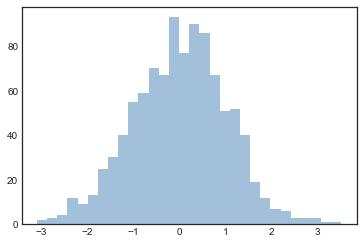
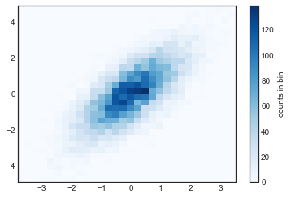
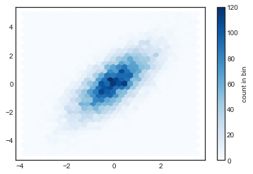

Histograms and Density
Contents
7. Histograms and Density¶
%matplotlib inline
import numpy as np
import matplotlib.pyplot as plt
plt.style.use('seaborn-white')
7.1. 一維的直方圖¶
一個簡單的直方圖，就用
plt.hist()就可以完成：
data = np.random.randn(1000)
plt.hist(data);
我們還有很多客製化的參數可以下：
plt.hist(data,
bins=30,
color='steelblue',
edgecolor='none',
histtype='stepfilled',
alpha=0.5);

如果想得到分類後的數據就好，那可以這樣做
counts, bin_edges = np.histogram(data, bins=5)
print(bin_edges) # 每個bin的起點終點
print(counts) # 每個 bin 對應到的次數
[-3.33953446 -2.087502 -0.83546954 0.41656293 1.66859539 2.92062785]
[ 22 181 484 259 54]
如果要同時畫多個 histogram，那就多做幾次
plt.hist()就好:
x1 = np.random.normal(0, 0.8, 1000)
x2 = np.random.normal(-2, 1, 1000)
x3 = np.random.normal(3, 2, 1000)
kwargs = dict(histtype='stepfilled', alpha=0.3, bins=40)
plt.hist(x1, **kwargs)
plt.hist(x2, **kwargs)
plt.hist(x3, **kwargs);

7.2. 二維的直方圖¶
# 生出二維常態的資料
mean = [0, 0]
cov = [[1, 1], [1, 2]]
x, y = np.random.multivariate_normal(mean, cov, 10000).T
7.2.1. plt.hist2d: 二維直方圖¶
剛剛一維的 histogram，是用
plt.hist()來畫，現在二維的 histogram，是用plt.hist2d()來畫.
plt.hist2d(x, y, bins=30, cmap='Blues')
cb = plt.colorbar()
cb.set_label('counts in bin')

就像剛剛可以用
np.histogram()來得到組別和各組的count的訊息，現在可以用np.histogram2d()來得到各組的組別(就是x和y的range)以及組別的count。作法如下：
counts, xedges, yedges = np.histogram2d(x, y, bins=30)
print(counts)
print(xedges)
print(yedges)
[[ 1. 1. 0. 0. 1. 0. 0. 0. 0. 0. 1. 0. 0. 0.
0. 0. 0. 0. 0. 0. 0. 0. 0. 0. 0. 0. 0. 0.
0. 0.]
[ 1. 0. 1. 0. 2. 0. 1. 0. 0. 1. 1. 0. 0. 0.
0. 0. 0. 0. 0. 0. 0. 0. 0. 0. 0. 0. 0. 0.
0. 0.]
[ 0. 2. 1. 0. 0. 2. 0. 2. 0. 1. 0. 0. 0. 0.
0. 0. 0. 0. 0. 0. 0. 0. 0. 0. 0. 0. 0. 0.
0. 0.]
[ 1. 2. 1. 0. 2. 3. 3. 2. 1. 1. 0. 0. 0. 0.
0. 0. 0. 0. 0. 0. 0. 0. 0. 0. 0. 0. 0. 0.
0. 0.]
[ 0. 1. 2. 1. 5. 4. 3. 4. 5. 3. 2. 1. 2. 0.
0. 0. 0. 1. 0. 0. 0. 0. 0. 0. 0. 0. 0. 0.
0. 0.]
[ 2. 0. 0. 4. 2. 5. 10. 8. 14. 13. 10. 2. 2. 1.
0. 0. 0. 0. 0. 0. 0. 0. 0. 0. 0. 0. 0. 0.
0. 0.]
[ 0. 1. 3. 1. 6. 9. 8. 13. 17. 6. 14. 11. 3. 1.
3. 0. 0. 0. 0. 0. 0. 0. 0. 0. 0. 0. 0. 0.
0. 0.]
[ 1. 0. 1. 1. 11. 10. 15. 26. 24. 26. 16. 26. 17. 8.
4. 3. 0. 0. 1. 0. 0. 0. 0. 0. 0. 0. 0. 0.
0. 0.]
[ 1. 0. 3. 4. 5. 15. 21. 28. 37. 42. 44. 21. 30. 11.
17. 7. 3. 0. 1. 0. 0. 1. 0. 0. 0. 0. 0. 0.
0. 0.]
[ 0. 0. 0. 2. 8. 10. 25. 25. 42. 43. 67. 53. 40. 38.
25. 6. 6. 0. 1. 0. 0. 0. 0. 0. 0. 0. 0. 0.
0. 0.]
[ 0. 0. 1. 2. 3. 5. 23. 26. 42. 63. 63. 70. 66. 36.
44. 17. 14. 6. 2. 0. 0. 0. 0. 0. 0. 0. 0. 0.
0. 0.]
[ 0. 0. 1. 2. 2. 10. 19. 33. 43. 53. 81. 70. 82. 91.
58. 28. 12. 10. 5. 2. 3. 0. 0. 0. 0. 0. 0. 0.
0. 0.]
[ 1. 0. 0. 1. 0. 8. 12. 23. 43. 64. 78. 107. 97. 81.
60. 55. 37. 14. 11. 6. 4. 0. 0. 0. 0. 0. 0. 0.
0. 0.]
[ 0. 0. 0. 2. 4. 4. 10. 20. 35. 63. 76. 124. 131. 118.
93. 98. 57. 41. 12. 11. 4. 1. 1. 0. 0. 0. 0. 0.
0. 0.]
[ 0. 0. 0. 0. 2. 3. 4. 8. 20. 32. 65. 94. 113. 111.
106. 115. 78. 35. 26. 16. 4. 4. 0. 0. 0. 0. 0. 0.
0. 0.]
[ 0. 0. 0. 1. 0. 1. 2. 6. 13. 28. 52. 92. 113. 139.
133. 115. 109. 77. 50. 24. 18. 4. 1. 0. 1. 0. 0. 0.
0. 0.]
[ 0. 0. 0. 0. 0. 0. 2. 4. 4. 14. 27. 53. 66. 101.
133. 106. 100. 91. 66. 36. 29. 6. 1. 0. 0. 1. 0. 0.
0. 0.]
[ 0. 0. 0. 0. 0. 0. 2. 3. 5. 24. 19. 48. 60. 95.
94. 126. 113. 104. 91. 47. 27. 19. 7. 2. 2. 0. 0. 0.
0. 0.]
[ 0. 0. 0. 0. 0. 0. 1. 1. 4. 4. 13. 25. 36. 62.
86. 114. 90. 88. 74. 69. 33. 14. 10. 5. 1. 0. 0. 0.
0. 0.]
[ 0. 0. 0. 0. 0. 0. 0. 0. 0. 1. 6. 12. 16. 33.
50. 69. 65. 79. 72. 55. 42. 19. 9. 2. 4. 2. 0. 0.
0. 0.]
[ 0. 0. 0. 0. 0. 0. 0. 0. 0. 0. 6. 8. 10. 21.
35. 42. 60. 66. 65. 58. 45. 23. 20. 4. 4. 0. 0. 0.
0. 0.]
[ 0. 0. 0. 0. 0. 0. 0. 0. 0. 1. 1. 0. 3. 9.
16. 36. 29. 52. 48. 43. 34. 26. 10. 8. 6. 3. 0. 0.
0. 0.]
[ 0. 0. 0. 0. 0. 0. 0. 0. 0. 0. 0. 0. 3. 5.
11. 19. 25. 34. 34. 45. 28. 19. 19. 9. 4. 1. 2. 0.
0. 0.]
[ 0. 0. 0. 0. 0. 0. 0. 0. 0. 0. 0. 1. 0. 2.
3. 9. 10. 15. 21. 19. 20. 25. 7. 8. 1. 5. 2. 1.
0. 1.]
[ 0. 0. 0. 0. 0. 0. 0. 0. 0. 0. 0. 0. 0. 0.
1. 7. 12. 7. 10. 12. 4. 15. 8. 3. 2. 3. 0. 1.
0. 0.]
[ 0. 0. 0. 0. 0. 0. 0. 0. 0. 0. 0. 0. 0. 1.
0. 0. 1. 2. 4. 5. 10. 7. 4. 5. 3. 3. 2. 1.
1. 1.]
[ 0. 0. 0. 0. 0. 0. 0. 0. 0. 0. 0. 0. 0. 0.
0. 0. 2. 1. 1. 2. 3. 7. 6. 2. 7. 0. 1. 0.
2. 0.]
[ 0. 0. 0. 0. 0. 0. 0. 0. 0. 0. 0. 0. 0. 0.
0. 0. 0. 1. 0. 3. 2. 1. 1. 1. 0. 0. 2. 0.
0. 0.]
[ 0. 0. 0. 0. 0. 0. 0. 0. 0. 0. 0. 0. 0. 0.
0. 0. 0. 0. 0. 0. 0. 0. 0. 0. 1. 0. 0. 0.
0. 0.]
[ 0. 0. 0. 0. 0. 0. 0. 0. 0. 0. 0. 0. 0. 0.
0. 0. 0. 1. 0. 0. 0. 0. 0. 0. 0. 2. 2. 0.
0. 0.]]
[-3.62270145 -3.38670009 -3.15069874 -2.91469739 -2.67869603 -2.44269468
-2.20669332 -1.97069197 -1.73469061 -1.49868926 -1.2626879 -1.02668655
-0.79068519 -0.55468384 -0.31868248 -0.08268113 0.15332022 0.38932158
0.62532293 0.86132429 1.09732564 1.333327 1.56932835 1.80532971
2.04133106 2.27733242 2.51333377 2.74933513 2.98533648 3.22133783
3.45733919]
[-5.08977715 -4.73391828 -4.37805941 -4.02220053 -3.66634166 -3.31048279
-2.95462391 -2.59876504 -2.24290617 -1.88704729 -1.53118842 -1.17532955
-0.81947067 -0.4636118 -0.10775293 0.24810595 0.60396482 0.95982369
1.31568257 1.67154144 2.02740031 2.38325919 2.73911806 3.09497693
3.4508358 3.80669468 4.16255355 4.51841242 4.8742713 5.23013017
5.58598904]
plt.hexbin(x, y, gridsize=30, cmap='Blues')
cb = plt.colorbar(label='count in bin')

7.2.2. Kernel density estimation¶
我們也可以去估計二維分配的 density，例如，我假設資料服從二維常態，然後去估計他
我們可以用
scipy.stats這個 module
from scipy.stats import gaussian_kde
# fit an array of size [Ndim, Nsamples]
data = np.vstack([x, y])
kde = gaussian_kde(data)
# evaluate on a regular grid
xgrid = np.linspace(-3.5, 3.5, 40)
ygrid = np.linspace(-6, 6, 40)
Xgrid, Ygrid = np.meshgrid(xgrid, ygrid)
Z = kde.evaluate(np.vstack([Xgrid.ravel(), Ygrid.ravel()]))
# Plot the result as an image
plt.imshow(Z.reshape(Xgrid.shape),
origin='lower', aspect='auto',
extent=[-3.5, 3.5, -6, 6],
cmap='Blues')
cb = plt.colorbar()
cb.set_label("density")

之後在 深入研究: 核密度估計的章節，會介紹 kernel density的估計方法。
後面的 使用seaborn進行視覺化，也會介紹seaborn更簡潔的語法，做到更客製化的繪圖。